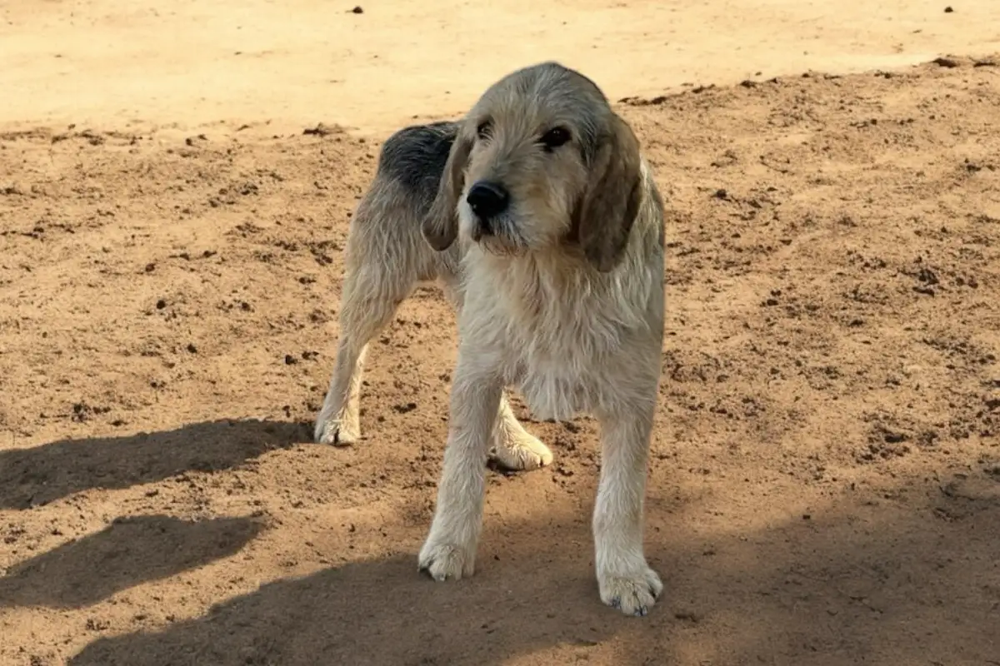
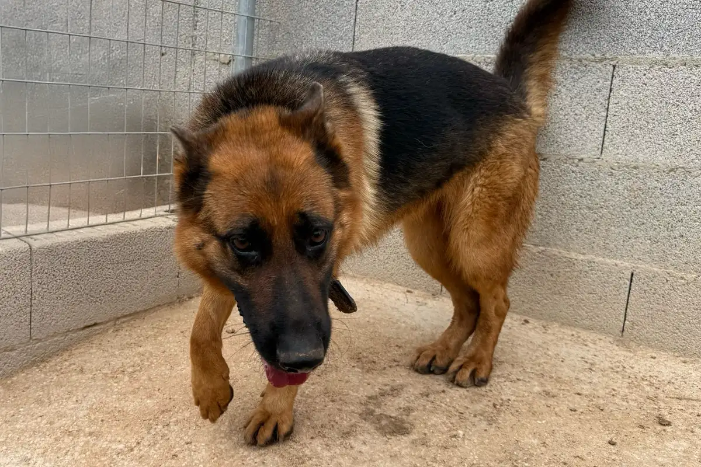
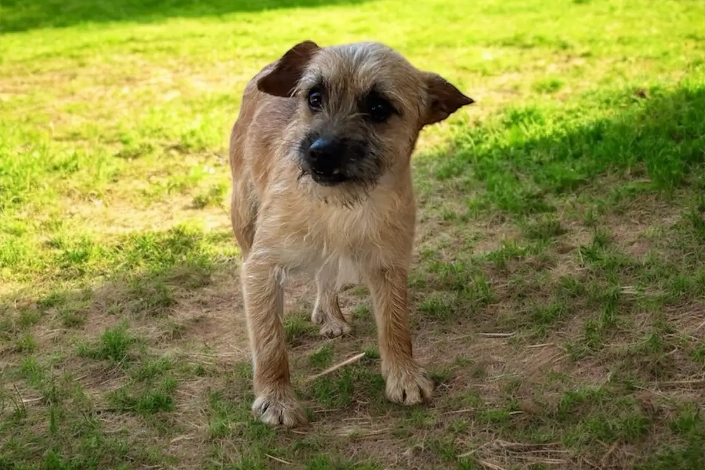
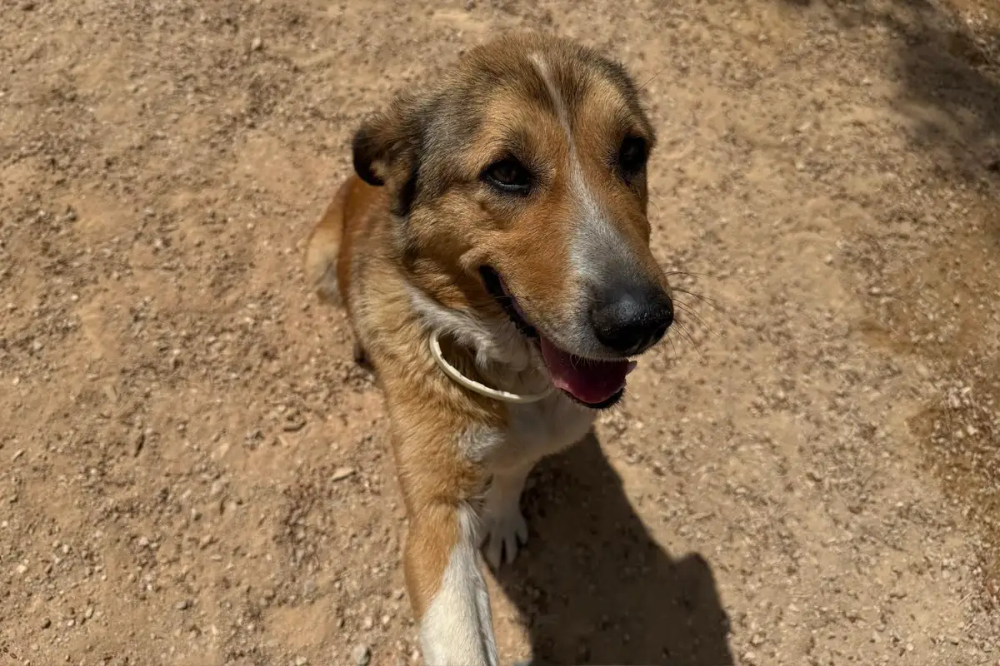
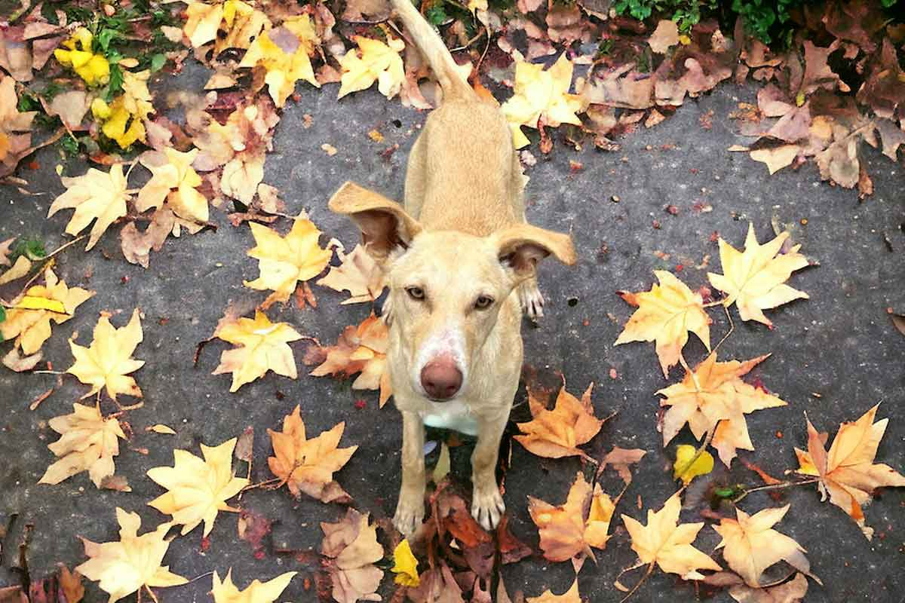
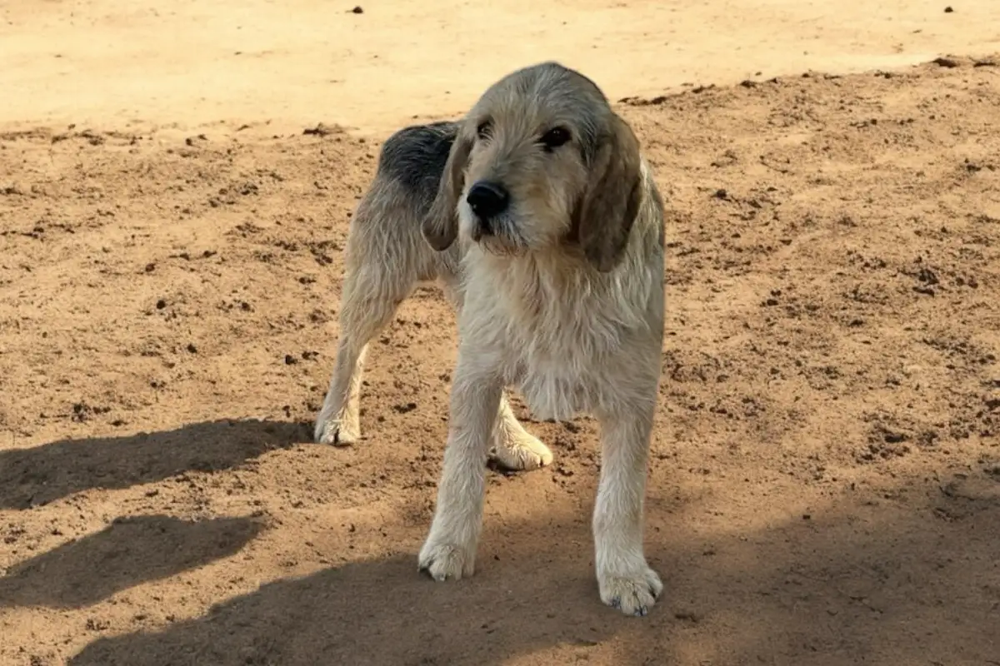
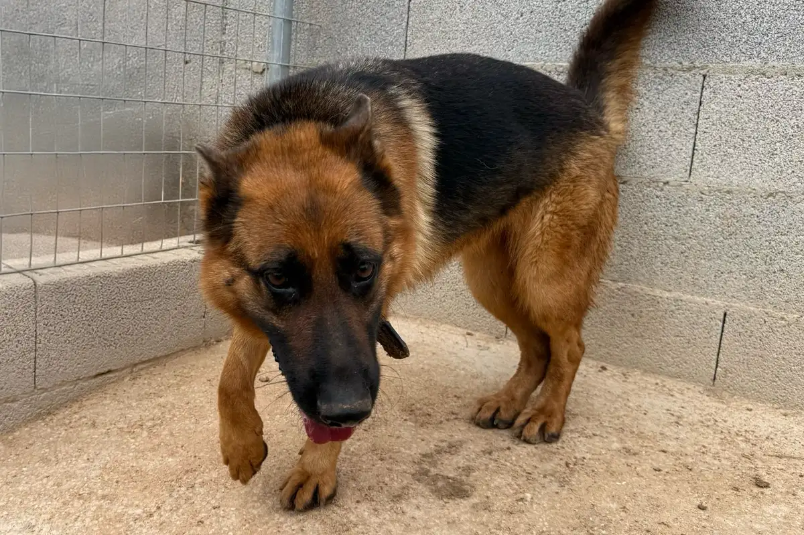
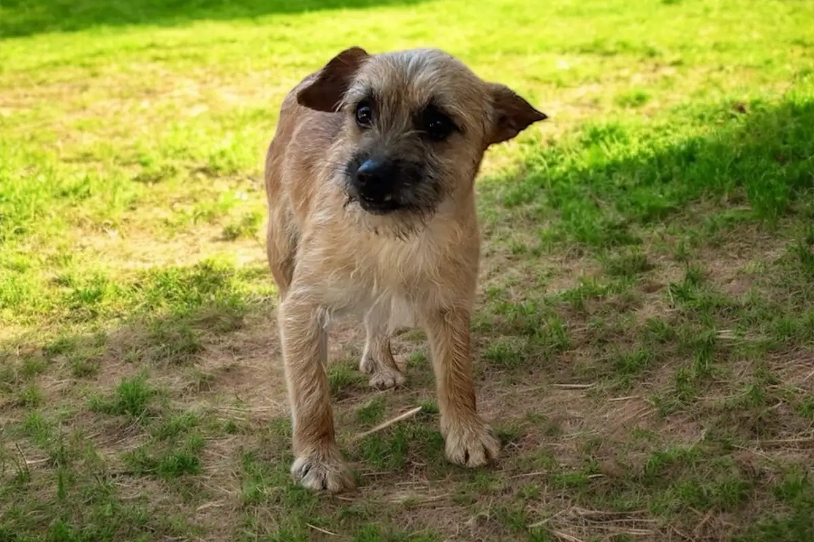
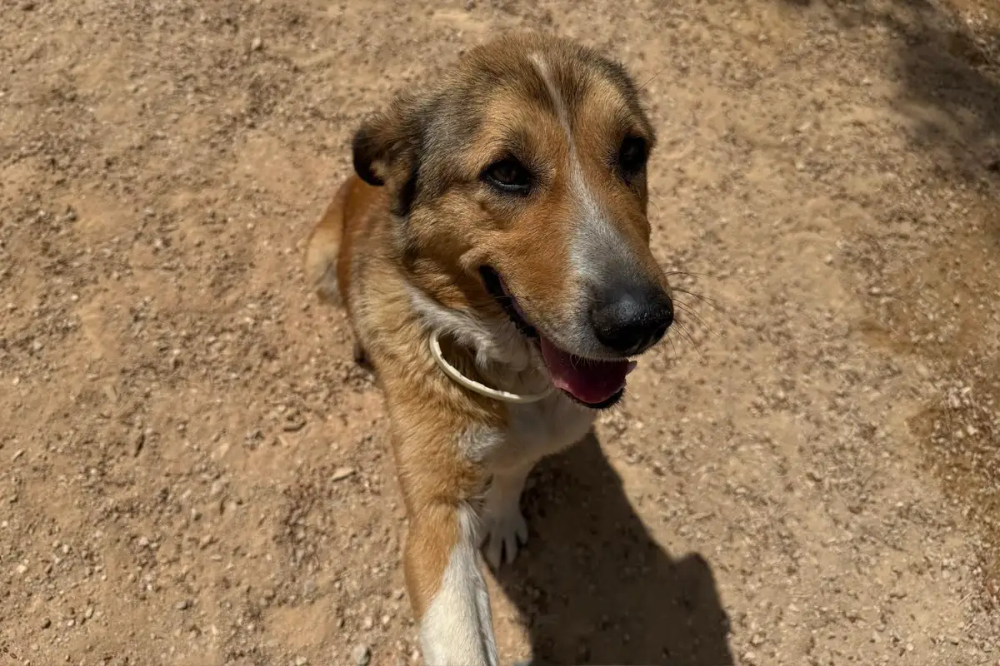
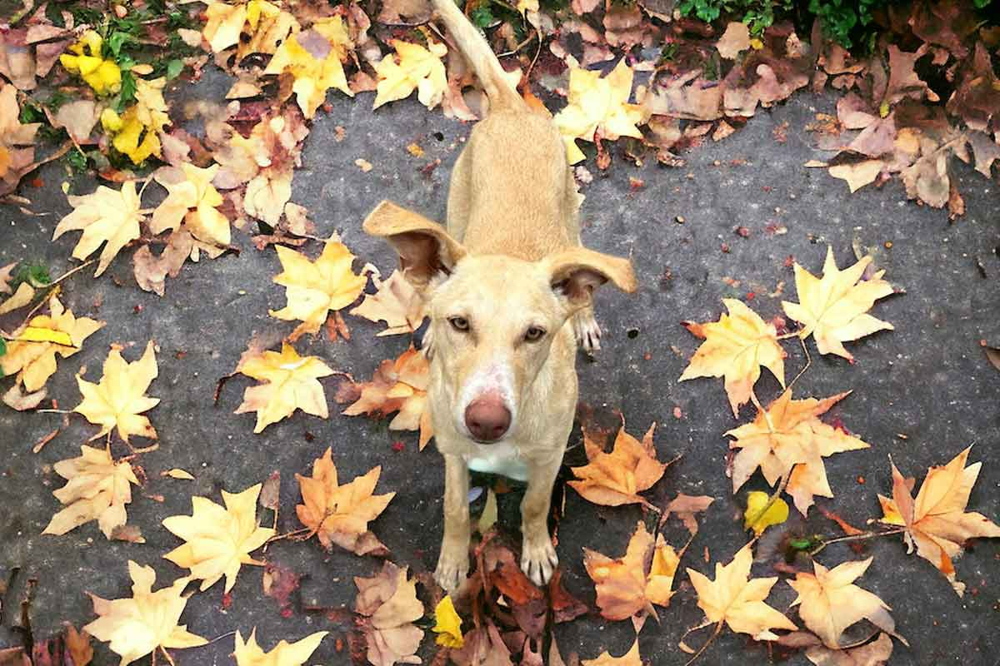

¿Qué es Morricos?
Morricos es un espacio digital donde podrás averiguar cómo ayudar a los animales que viven con nosotros.
Inspirar, apadrinar, ayudar y educar es lo que persigue Morricos, porque las personas deben vivir en consonancia con los animales.
Sé parte del cambio, suscríbete a nuestra newsletter.
Historias de vida
Historias de animales que desean tener una persona a la que cuidar y que los cuiden. conócelos en su espacio.
Duko
Duko es un podenco joven que rescatamos en un pueblo tras haber pasado mucho tiempo solo y con miedo. Al principio no quería acercarse a nadie, pero poco a poco está empezando a confiar. Tiene una mirada noble y tranquila, y aunque aún le queda camino por recorrer, sabemos que con paciencia y cariño se va a recuperar bien.
ApadrinarPhoskito
Tiene un año y ha pasado sus primeros días con nosotros tras ser rescatado en un pueblo donde llevaba tiempo solo y abandonado. Ahora que está a salvo, se ha mostrado como un perrito noble, tranquilo y muy agradecido. Busca ese hogar definitivo donde pueda dejar atrás el abandono y vivir como se merece.
ApadrinarMira más Morricos
 








